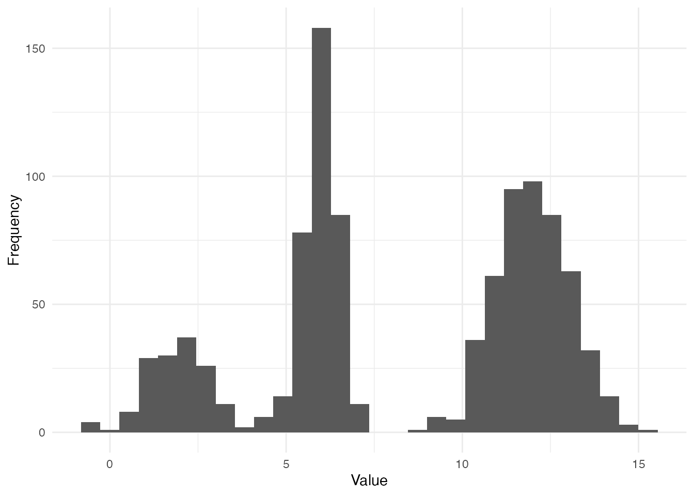
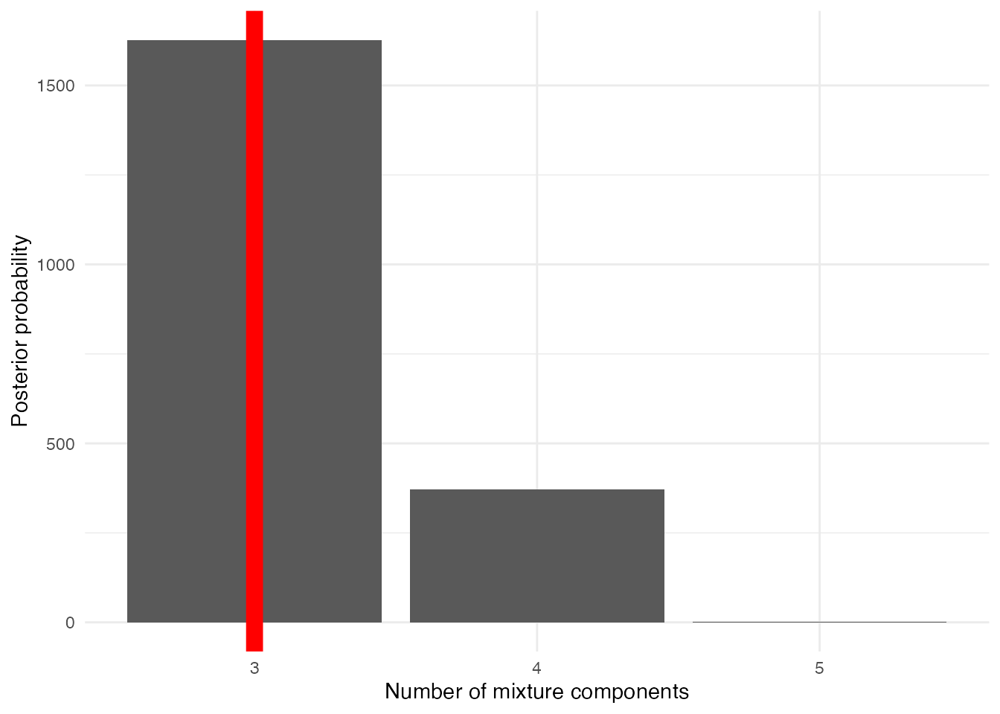
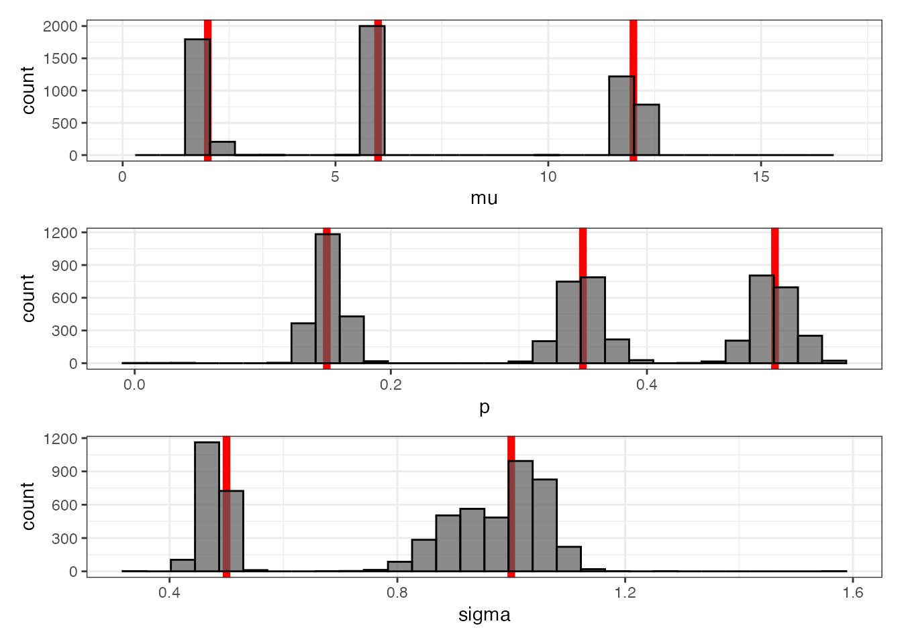
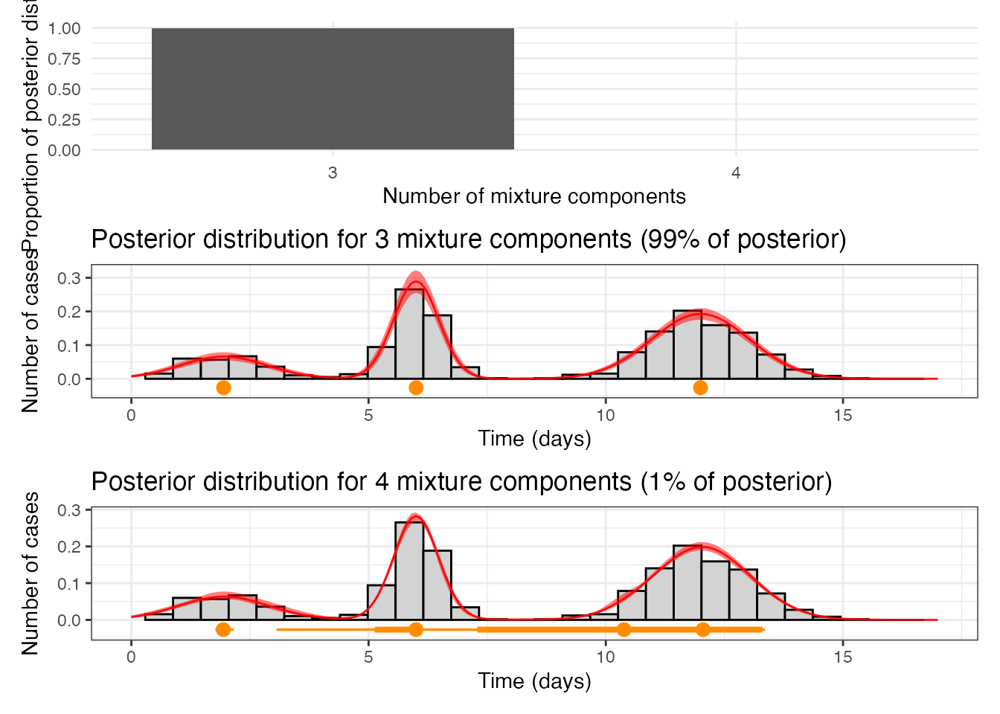

Ex1_mixture.RmdThis markdown block outlines a simulation study designed to demonstrate how RJMCMC can be used to recover the parameters of a mixture model. Here’s what it does:
This block serves as a guide for implementing and understanding RJMCMC in the context of mixture model recovery. If you’d like, I can help add technical details or coding snippets to complement it!
We aim to recover the parameters of a mixture distribution using Reversible Jump Markov Chain Monte Carlo (RJMCMC). The target mixture distribution is defined as follows:
jump matrix.dnorm.sampleBirthProposal).Therefore, we simulate a dataset from a predefined mixture model with known parameters (). Here, - K = 3 - = 2, 6, 12 - = 1, 0.5, 1 - = 0.3, 0.7, 1
m <- 5
# Run the model
obs <- c(sample(rnorm(10e4, 2, 1), 30 * m, replace = TRUE),
sample(rnorm(10e4, 6, 0.5), 70 * m, replace = TRUE),
sample(rnorm(10e4, 12, 1), 100 * m, replace = TRUE))
library(ggplot2)
ggplot() + geom_histogram(aes(obs), bins = 30) + theme_minimal() + labs(x = "Value", y = "Frequency")
The model represents a Gaussian mixture distribution with the following key components:
This model structure allows the RJMCMC algorithm to infer both the number of components and their parameters, effectively capturing the complexity of the underlying data distribution.
sampleInitPrior:
sampleInitJump:
jump matrix, representing the mixture
parameters:
evaluateLogPrior:
evaluateLogLikelihood:
sampleBirthProposal:
sampleDeathProposal:
evaluateBirthProposal:
evaluateDeathProposal:
jump matrix.sampleProposal.sampleBirthProposal).
model <- list(
lowerParSupport_fitted = c(-8),
upperParSupport_fitted = c(8),
namesOfParameters = c("sigma"),
sampleInitPrior = function(datalist) {
rnorm(1, 0, 1)
},
sampleInitJump = function(params, datalist) {
p <- c(0.5, 0.5)
mu <- c(1, 4)
sigma <- c(1, 1)
jump_new <- matrix(c(p, mu, sigma), nrow = 3, byrow = TRUE)
jump_new
},
evaluateLogPrior = function(params, jump, datalist) {
p <- dnorm(params[1], 0, 1, log = TRUE)
p_vec <- jump[1, ]
for(i in 1:length(p_vec) ) {
p <- p + dunif(p_vec[i], 0, 1, log = TRUE)
}
mu_vec <- jump[2, ]
for(i in 1:length(mu_vec) ) {
p <- p + dunif(mu_vec[i], 0, 20, log = TRUE)
}
sigma_vec <- jump[3, ]
for(i in 1:length(sigma_vec) ) {
p <- p + dunif(sigma_vec[i], 0.3, 3, log = TRUE)
}
N <- ncol(jump)
p <- p + dunif(N, 1, 8)
# cat("prior: ", str(p))
p
},
evaluateLogLikelihood = function(params, jump, datalist) {
# cat("in: evaluateLogLikelihood")
ll <- 0
N <- ncol(jump)
p_vec <- jump[1, ]
mu_vec <- jump[2, ]
sigma_vec <- jump[3, ]
z <- datalist$obs
N_data <- datalist$N_data
sigma <- params[1]
for (i in 1:N_data) {
i_x = 0
for (j in 1:N) {
i_x <- i_x + p_vec[j] * dnorm(z[i], mu_vec[j], sigma_vec[j])
}
ll <- ll + log(i_x)
}
# cat("loglik: ", str(ll) )
ll
},
sampleBirthProposal = function(params, jump, i_idx, datalist) {
p_new_sample <- runif(1, 0, 1)
p_new <- c(jump[1, ] * (1 - p_new_sample), p_new_sample)
mu_new_sample <- runif(1, 0, 20)
mu_new <- c(jump[2, ], mu_new_sample)
sigma_new_sample <- runif(1, 0.3, 3)
sigma_new <- c(jump[3, ], sigma_new_sample)
jump_new <- matrix(c(p_new, mu_new, sigma_new), nrow = 3, byrow = TRUE)
jump_new
},
sampleDeathProposal = function(params, jump, i_idx, datalist) {
N <- ncol(jump)
jump_remove <- jump[, i_idx]
jump_new <- jump[, -i_idx]
jump_new[1, ] <- c(jump_new[1, ] / (1 - jump_remove[1]))
jump_new
},
evaluateBirthProposal = function(params, jump, i_idx, datalist) {
N <- ncol(jump)
log(1 / (N * dunif(jump[2, N], 0, 20 ) ))
},
evaluateDeathProposal = function(params, jump, i_idx, datalist) {
N <- ncol(jump)
log((N) * dunif(jump[2, i_idx], 0, 20 ) )
},
sampleJump = function(params, jump, i_idx, datalist) {
N <- ncol(jump)
jump_update <- jump[, i_idx]
p_new <- min(max(jump_update[1] + rnorm(1, 0, 0.01), 0), 1)
diff = (jump_update[1] - p_new) / (N - 1)
p_new_vew <- jump[1, ] + diff
p_new_vew[i_idx] <- p_new
jump[1, ] <- p_new_vew
jump[2, i_idx] <- jump_update[2] + rnorm(1, 0, 0.1)
jump[3, i_idx] <- max(jump_update[3] + rnorm(1, 0, 0.1), 0.3)
jump
},
sampleProposal = function(params, jump, datalist) {
N <- ncol(jump)
if (N == 2) {
q <- c(0.0, 0.67, 1.0)
} else if (N == 20) {
q <- c(0.33, 1.0, 1.0)
} else {
q <- c(0.33, 0.67, 1.0)
}
q
}
)This code block defines the settings for the RJMCMC algorithm, prepares the input data, executes the model, and saves the results. Below is a breakdown of its components:
The settings list specifies the configuration for the
RJMCMC run: - numberChainRuns: Specifies
the number of independent MCMC chains to run (e.g., 4 chains). -
numberCores: Indicates the number of CPU
cores allocated for computation. Parallel processing is possible if
runParallel = TRUE. -
iterations: Sets the total number of
iterations for each MCMC chain (e.g., 4000 iterations). -
burninPosterior: Defines the number of
initial iterations to discard as burn-in (e.g., 2000 iterations). -
thin: Thinning interval to reduce
autocorrelation by retaining only every
-th
sample (e.g., every 10th sample). -
runParallel: Boolean flag controlling
whether chains are run in parallel (FALSE here indicates
sequential execution). - onDebug: Boolean
flag for enabling debugging mode, which can output additional
information during execution.
The data_l list structures the observed data for use in
the RJMCMC function: - obs: A vector
containing the observed data points, likely representing samples drawn
from an unknown mixture distribution. -
N_data: The total number of observations,
calculated as the length of the obs vector.
This organized format ensures compatibility with the
rjmc_func function.
The rjmc_func function executes the RJMCMC algorithm
using: - model: The previously defined
RJMCMC model, containing prior distributions, likelihood functions, and
proposal mechanisms. - data_l: The
structured data list, providing the observed values and their count. -
settings: The configuration for the MCMC
run.
The output, stored in the outputs object, contains the
results of the RJMCMC process, including posterior samples and
diagnostics for the model parameters.
# Define the settings
settings <- list(
numberCores = mc.cores,
numberChainRuns = 4,
iterations = 10000,
burninPosterior = 5000,
thin = 10
)
data_l <- list(
obs = obs,
N_data = length(obs)
)
outputs <- rjmc_func(model, data_l, settings)
saveRDS(outputs, here::here("outputs", "fits", "mixture_norm", "fit_sim_null.RDS"))This section examines the posterior distributions generated by the RJMCMC algorithm. We aim to evaluate the ability of the model to recover key parameters of the mixture distribution, such as the number of components (), the mixing proportions (), the means (), and the standard deviations ().
In this subsection, we analyze the posterior distribution of the number of mixture components (). The posterior probabilities for different values of are calculated, and the mode of the posterior distribution is compared to the true value. The bar chart below illustrates the posterior probabilities for the number of components, with the true value highlighted by a red vertical line:
## Loading required package: purrr##
## Attaching package: 'purrr'## The following objects are masked from 'package:rjmc':
##
## accumulate, when
require(ggplot2)
n_chain <- 4
tables_length <- get_lengths(outputs, n_chain)
df_K_post <- data.frame(
dim = names(tables_length),
post = as.vector(tables_length)
)
df_K_post %>% ggplot() +
geom_col(aes(x = dim, y = post)) + theme_minimal() +
geom_vline(xintercept = c("3"), color = "red", size = 4) +
labs(x = "Number of mixture components", y = "Posterior probability")## Warning: Using `size` aesthetic for lines was deprecated in ggplot2 3.4.0.
## ℹ Please use `linewidth` instead.
## This warning is displayed once every 8 hours.
## Call `lifecycle::last_lifecycle_warnings()` to see where this warning was
## generated.
Here, we examine the posterior distributions of the mixing proportions (p), means (μ), and standard deviations (σ) for the mixture components. Histograms are used to visualize the posterior samples, with the true values highlighted by red vertical lines.
The histograms provide insights into the precision of the RJMCMC algorithm in recovering the true parameter values.
posterior_sample <- map_df(1:4,
function(y) {
map_df(1:length(outputs$jump[[y]]),
function(x) {
outputs$jump[[y]][[x]] %>% t %>% as.data.frame %>% arrange(V2) %>% mutate(n = 1:nrow(.), sample = x, chain = y) %>%
set_names(c("p", "mu", "sigma", "n", "sample", "chain")) %>% pivot_longer(-c(n, sample, chain), names_to = "parameter", values_to = "values" )
}
)
}
) %>% pivot_wider(names_from = "parameter", values_from = "values")
p1 <- posterior_sample %>% ggplot() +
geom_vline(xintercept = c(2, 6, 12), color = "red", size = 2) +
geom_histogram(aes(mu), color = "black", alpha = 0.7) + theme_bw() +
xlim(0, 17)
p2 <- posterior_sample %>% ggplot() +
geom_vline(xintercept = c(0.15, 0.35, 0.5), color = "red", size = 2) +
geom_histogram(aes(p), color = "black", alpha = 0.7) + theme_bw()
p3 <- posterior_sample %>% ggplot() +
geom_vline(xintercept = c(1, 0.5, 1 ), color = "red", size = 2) +
geom_histogram(aes(sigma), color = "black", alpha = 0.7) + theme_bw()
p1 / p2 / p3## `stat_bin()` using `bins = 30`. Pick better value with `binwidth`.## Warning: Removed 2 rows containing missing values or values outside the scale range
## (`geom_bar()`).## `stat_bin()` using `bins = 30`. Pick better value with `binwidth`.
## `stat_bin()` using `bins = 30`. Pick better value with `binwidth`.
This subsection summarizes the posterior distributions of the mixture model, focusing on the most probable number of components (K) and the associated parameter values. The posterior proportions for each K are calculated, and the posterior trajectory of parameters is visualized for selected values of K.
The first plot below shows the posterior proportions for the number of components (K). Subsequent plots visualize the posterior trajectories for p, μ, and σ for K = 3 and K = 4.
tables_length <- get_lengths(outputs, n_chain)
mode_post <- names(sort(tables_length, decreasing = TRUE))[1]
mix_size <- mode_post
post_process_3 <- get_clean_posterior(outputs, "3", 4)
post_process_4 <- get_clean_posterior(outputs, "4", 4)
prop <- tables_length / sum(tables_length)
plotl <- prop[mix_size]
p0 <- ggplot() + geom_col(aes(x = names(prop), y = prop)) + ylim(0, 1) + theme_minimal() +
labs(x = "Number of mixture components", y = "Proportion of posterior distribution")
p1_anot <- get_posterior_component_size("3", tables_length, post_process_3, data_l)## Warning: The dot-dot notation (`..density..`) was deprecated in ggplot2 3.4.0.
## ℹ Please use `after_stat(density)` instead.
## ℹ The deprecated feature was likely used in the rjmc package.
## Please report the issue to the authors.
## This warning is displayed once every 8 hours.
## Call `lifecycle::last_lifecycle_warnings()` to see where this warning was
## generated.## `stat_bin()` using `bins = 30`. Pick better value with `binwidth`.## Warning: Removed 4 rows containing non-finite outside the scale range
## (`stat_bin()`).
p2_anot <- get_posterior_component_size("4", tables_length, post_process_4, data_l)## `stat_bin()` using `bins = 30`. Pick better value with `binwidth`.## Warning: Removed 4 rows containing non-finite outside the scale range
## (`stat_bin()`).
p0 / p1_anot / p2_anot## `stat_bin()` using `bins = 30`. Pick better value with `binwidth`.## Warning: Removed 4 rows containing non-finite outside the scale range
## (`stat_bin()`).## Warning: Removed 2 rows containing missing values or values outside the scale range
## (`geom_bar()`).## Warning: Removed 1503 rows containing non-finite outside the scale range
## (`geom_slabinterval()`).## Warning: Removed 10 rows containing missing values or values outside the scale range
## (`geom_line()`).## `stat_bin()` using `bins = 30`. Pick better value with `binwidth`.## Warning: Removed 4 rows containing non-finite outside the scale range
## (`stat_bin()`).## Warning: Removed 2 rows containing missing values or values outside the scale range
## (`geom_bar()`).## Warning: Removed 2004 rows containing non-finite outside the scale range
## (`geom_slabinterval()`).## Warning: Removed 10 rows containing missing values or values outside the scale range
## (`geom_line()`).
This analysis highlights the posterior support for different numbers of components and provides a detailed summary of the recovered parameters for the most probable configurations.